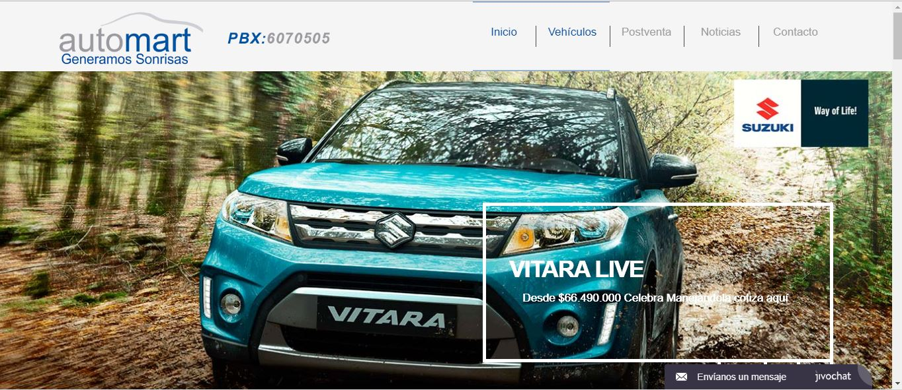

<div id="portfolio-page" class="portfolio-page-content">
    <div class="container">
        <div class="portfolio-nav">
            <div id="portfolio-close-button" class="portfolio-close-button">
                <a href="#portfolio"><i class="fa fa-close"></i></a>
            </div>
        </div>

        <div class="portfolio-title">
            <h1>Desarrollo Web</h1>
        </div>

        <div class="row">
            <div class="col-sm-7 col-md-7 portfolio-block">
                <div class="owl-carousel portfolio-page-carousel">
                    <div class="item">
                        
                    </div>
                    
                </div>

               

                <!--
                <div class="portfolio-page-image">
                    
                </div>
                -->

                <script type="text/javascript">
                    jQuery(document).ready(function($){
                        $('.portfolio-page-carousel').owlCarousel({
                            smartSpeed:1200,
                            items: 1,
                            loop: true,
                            dots: true,
                            nav: true,
                            navText: false,
                            margin: 10
                        });
                    }); 
                </script>
            </div>

            <div class="col-sm-5 col-md-5 portfolio-block">
                <!-- Project Description -->
                <div class="block-title">
                    <h3>Descripción</h3>
                </div>
                <ul class="project-general-info">
                    
                    <li><p><i class="fa fa-globe"></i> <a href="http://automart.com.co/" target="_blank">http://automart.com.co/</a></p></li>
                    
                </ul>

                <p class="text-justify">AUTO MART S.A.S FUNDADA EL 22 DE MARZO DEL 2012, con una vitrina ubicada en la Calle 72 # 20c-39 Bogotá D.C y el taller de mantenimiento y reparación de vehículos, actualmente ubicado en la Carrera 23 # 71a – 46, con el firme propósito de distribuir y comercializar vehículos y repuestos SUZUKI. </p>
                <!-- /Project Description -->

                <!-- Technology -->
                <div class="tags-block">
                    <div class="block-title">
                        <h3>Lenguajes</h3>
                    </div>
                    <ul class="tags">
                        <li><a>HTML5</a></li>
                        <li><a>CSS3</a></li>
                        <li><a>jQuery</a></li>
                        <li><a>Ajax</a></li>
                        <li><a>PHP5</a></li>
                    </ul>
                </div>
                <!-- /Technology -->

                <!-- Share Buttons -->
                
                <!-- /Share Buttons -->
            </div>
        </div>
    </div>
</div>
